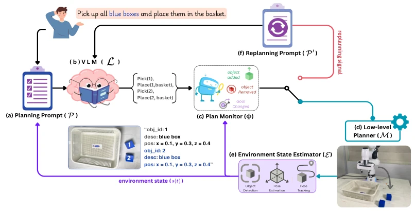
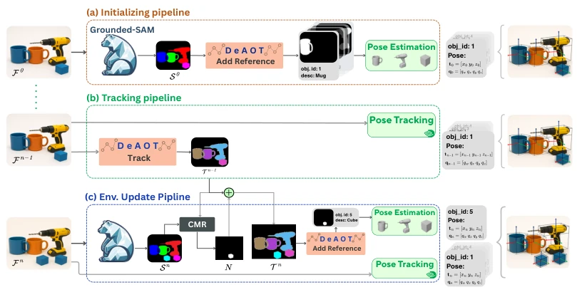
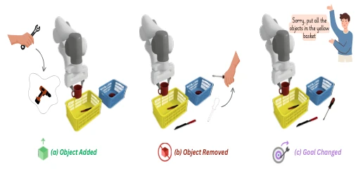
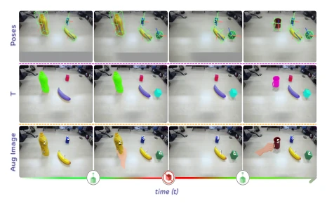
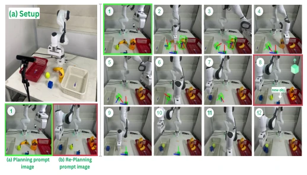

ProAct-VLM attempts to equip VLMs with a "real-time radar", calling a halt before the robot does something wrong; this approach is far superior to those reactive methods that "turn back only after hitting a wall". It transforms the VLM from a "hindsight expert" to a "foresight expert", indeed reducing invalid actions and collision risks in dynamic environments. However, the system's dependency on CAD models and limitations of preset object vocabularies make it appear like a "flower in a greenhouse"; once encountering unseen objects or extremely chaotic scenes, it might be exposed. Moreover, although it claims real-time, it relies on periodic full updates, and whether this "intermittent sobriety" is sharp enough in high-speed dynamic scenarios remains questionable. Overall, it is a practical improvement under specific constraints, but still far from true "general embodied intelligence".
Long-horizon robot tasks in open worlds are highly susceptible to environmental perturbations, and traditional rule-based methods appear fragile due to lack of generalization capabilities [2]. Existing VLM methods, although possessing powerful reasoning capabilities, mostly adopt offline planning or trigger replanning only after execution failure (Reactive Replanning), such as Replan [9] and ReplanVLM [8], which leads to robots potentially completing invalid or even dangerous actions during execution. Furthermore, some methods only perform discrete checks before action execution [10], failing to capture dynamic changes during action execution. This "hindsight" feedback mechanism not only reduces task efficiency but may also cause object damage. Therefore, there is an urgent need for a closed-loop framework capable of continuously perceiving the environment and adjusting strategies instantly before failures occur, to cope with unpredictable interference in the real world.
ProAct-VLM constructs a closed-loop framework containing four core components: a pre-trained VLM as planner, a real-time environment state estimator (E), a plan monitor (Φ), and a low-level planner. The overall process begins with the VLM generating a symbolic task plan based on natural language instructions and initial environment state. During plan execution, the environment state estimator E runs continuously, performing open-vocabulary detection via Grounded-SAM, multi-object tracking via DeAOT, and 6-DoF pose estimation via FoundationPose, to construct a structured environment state s(t) containing object IDs, semantic labels, and poses in real-time. The plan monitor Φ constantly compares the current state s(t) with the previous state s(t-Δt); once perturbations ∆ such as object addition/removal or target changes are detected, the replanning mechanism is triggered immediately. At this time, the system generates a new prompt P' containing the latest environment state and perturbation signal, re-input into the VLM to generate a corrected action sequence, thereby achieving "pre-failure" adaptation. The key innovation of this framework lies in deeply coupling the lightweight perception pipeline with the VLM, eliminating ambiguity in multi-object scenarios through instance-level grounding (Augmented Image + Object IDs), ensuring the VLM can make decisions based on precise visual and spatial information.

Fig. 1: Overview of the proposed ProAct-VLM framework. (a) The system begins with a high-level user prompt, which is then converted into a planning prompt. (b) The VLM generates an initial plan based on this input. (e) Meanwhile,the Environment State Estimator continuously constructs a structured scene representation (object IDs, descriptions, poses, and the current Augmented image). (c) The Plan Monitor tracks this state and identifies task-relevant changes (e.g., object addition, removal, or goal modification). When such changes occur, (f) a re-planning prompt is issued to the VLM. (d) The Motion Planner executes the current plan until re-planning is triggered, enabling adaptive task execution in dynamic environments..

Fig. 2: Overview of the proposed perception pipeline. The system operates in three cyclic phases: Initialization (a), Tracking (b), and Environment Updating (c). In (a) Grounded-SAM detects objects from an input image using text prompts, and generates labeled segmentation masks. These masks are linked to CAD models and processed by FoundationPose for initial 6-DoF pose estimation. During (b), DeAOT tracks object masks across frames, while FoundationPose perform pose tracking for already registered objects. In (c), object detection is re-invoked periodically to identify new objects using a Comparing Mask Results (CMR) strategy, followed by pose estimation and reference update.
Researchers conducted long-horizon sorting task experiments on a real Franka manipulator, simulating three perturbation scenarios: object addition, removal, and target change. Evaluation metrics include Success Rate and Efficiency. Ablation experiments compared five VLM models including GPT-4o and Gemini 2.5 Pro, finding that Gemini 2.5 Pro performed best in spatial reasoning and long-horizon planning, with a success rate of 100%. Compared to baselines, the proposed instance-level grounding strategy significantly outperforms LLM3+Image relying only on text coordinates and OWG relying on VLM-inferred categories, especially showing obvious advantages when distinguishing objects of the same class. Compared to reactive replanning methods such as VILA and Replan-VLM, ProAct-VLM avoided invalid grasps in object removal scenarios and prevented collisions in object addition scenarios, significantly improving task success rate and execution efficiency.

Fig. 4: Disturbance types used in experiments: (a) object addition, (b) object removal, (c) goal change.

Fig. 3: illustrates of E in action. The framework detects, segments, and estimates object poses as the scene evolves, correctly handling object additions and removals.

Fig. 6: The robot executes an initial VLM-generated plan; after a new object is introduced and detected by E (screenshot 8), the plan monitor triggers re-planning. The updated plan is executed successfully (screenshots 9–12).